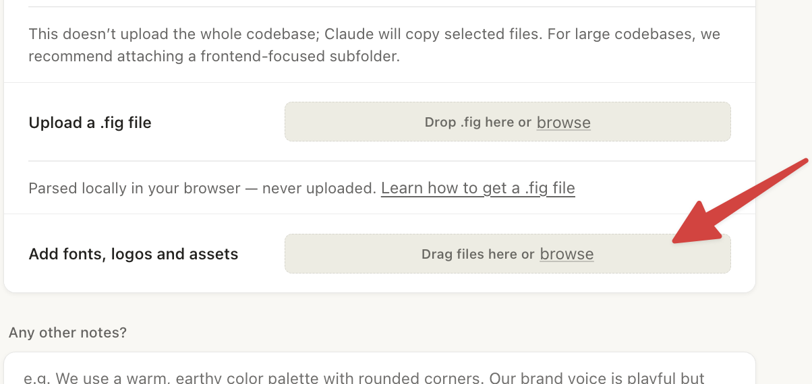
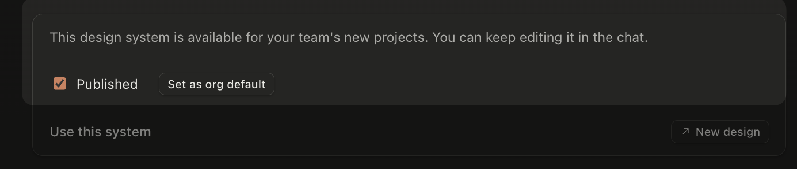
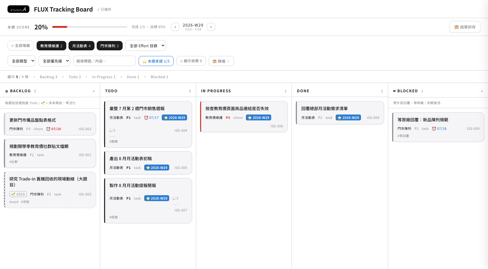
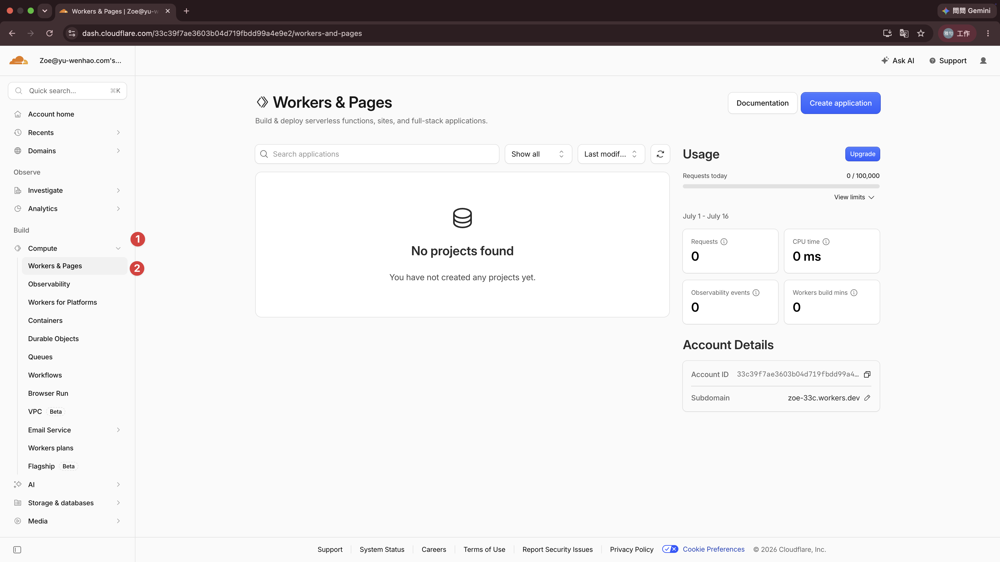

STUDIO A. ／ E 組 · D2
2026 / 09 / 11維修部 ＋ 教育事業部 ＋ 事業發展部 ＋ pqi · 11 人 · 上午半天
把成果交出去，
把任務放上板。
把任務放上板。
上午兩件事：一份給主管的簡報 · 一塊自己做的任務板 —— 做完，你的任務就都在板上看。
講師 余文皓
匯流顧問有限公司
2026 / 09 / 11
STUDIO A · E 組 · 2026/09/11
開場今天三小時
上週你做了會跑的東西；
今天做看得見的東西。
今天做看得見的東西。
上週 · 9/4 你已經有的
跑一次，出一份報表
四張表對三件事的維修週報 skill · 照規則清單對帳的 auditor · 一座卡片盒 · 接上的信箱與行事曆。
它們要你「去叫它」才會動
今天 · 9/11 要加的兩樣
給主管的簡報 · 一塊任務板
上半場：把你的報表變成主管看的簡報。
下半場：做一塊板，把任務全搬上去 —— 之後開工、收工、週結算，Claude 都從板開始。
下半場：做一塊板，把任務全搬上去 —— 之後開工、收工、週結算，Claude 都從板開始。
它們隨時打開就在那裡
兩樣都不用寫程式 —— 一樣是你講、Claude 做、你驗收。
STUDIO A · E 組 · 2026/09/11
回收作業10 MIN
上週那個 skill ——
你拿真資料跑了嗎？
你拿真資料跑了嗎？
9/4 收工時的作業：把 B7 課堂起頭的那個 skill 做完 —— 跑出第一版的人包成 skill，沒跑完的補完。
抽 3–4 位 · 每人 2 分鐘
① 你的 skill 做什麼？
② 拿真資料跑，第一次哪裡不對？
③ 你改了什麼它才對？
② 拿真資料跑，第一次哪裡不對？
③ 你改了什麼它才對？
做不完不是問題，沒開始跑才是 —— 今天結束前你會有第二個成品。
STUDIO A · E 組 · 2026/09/11
生簡報上半場 · 第一件事
查到的、做到的 ——
還要講出去。
還要講出去。
查回來的進了 Atlas、教會它的變成了 skill —— 但月會上、主管面前，這些得變成一份講得出去的簡報。這一段，多開一張工作台。
生簡報 · 35 MIN
生簡報
生簡報 · 痛點還剩一段手工
查有人幫了、skill 也會包了 —— 簡報，還是自己一頁一頁做。
① 想講什麼
給誰看、講哪幾件、順序怎麼排 —— 全在你腦子裡，還沒成形。
② 做出來
每頁的標題、內容、配圖，再排成版面 —— 一頁一頁手工。
這一段 —— 把這兩步手工交出去：你出判斷，它出苦工。
生簡報
生簡報 · 這一段的路VS Code 之外
交給 Claude Design —— 它照稿排版。
不是新軟體 —— 同一個 Claude，這次在瀏覽器上，打開就有。它照稿排版 —— 不幫你決定要講什麼。

你給它兩樣 · 做好一樣勾一樣
☐ 公司規格 —— 長什麼樣
☐ 內容稿 —— 想講什麼
它還你
整份投影片
一生出來就是公司的樣子
順序這樣走 —— 先把公司規格建進去（只建這一次），再回頭寫稿，最後一次生成到位。
生簡報
生簡報 · 第 0 步公司的樣子
「公司的樣子」—— 存成一套規格。
logo、配色、字型、版型 —— 存成一套規格。Design 讀了它，生出來的每一份自動就是公司的樣子。建一次、全公司用。
SA
logo
商標、放哪、留邊
配色
白 · 近黑 · 一點 A 藍
AaAa
字型
公司指定的那套黑體
間距 · 版型
大留白 · 一頁一重點
150
元件樣式
封面 / 大數字 / 卡片
Design 在網頁上 —— 看不到你電腦裡的檔案。規格檔我們做好了，下一頁直接匯進去。
生簡報
生簡報 · 動手①下載 · 建立
跟著做 —— 先把 STUDIO A 的規格建起來。
1
Design systems → Create design system

2
選 Create here

下載＋兩步點完就好 —— 檔案下一頁拖。
生簡報
生簡報 · 動手①拖檔 · 發佈 · 5 MIN
整包拖進去 —— 它自己生。
3
下載的 zip 直接拖進 Add fonts, logos and assets → Continue

4
按 Continue 後它自己生成 5–8 分鐘 —— 這段等待我們拿來寫稿，先往下。

好了回來勾 Published —— 等下生投影片時，才選得到這套規格。
按出 Continue 就算完成 —— 生成讓它自己跑，第一樣 公司規格 ✓。卡住 —— 我在桌邊。
05:00
生簡報
生簡報 · 第①步想講什麼
✓ 公司規格☐ 內容稿 —— 這一步
想講什麼 —— 跟 Claude Code 討論出來。
你
Mac mini 新品下週就到貨 —— 做一份給門市跟電商同事的新品說明，9/22 到貨前，大家把資訊搞清楚。
Claude
那先講結論。我排一版故事線 —— 5 頁：一句話總結、規格對照、售價與時程、要注意的、資料來源。
你
規格對照 —— 跟上一代並排成表格，一頁一張講清楚。
Claude
排好了。每頁配好標題跟重點 —— 你看順序對不對。
這段討論裡 · 誰出什麼
你出判斷 —— 給誰看、要他做什麼、哪些能講 —— 只有你知道
它出草稿 —— 故事線、幾頁、每頁的標題跟重點 —— 你點頭才算數
討論定案，存成一份 —— 內容稿。
生簡報
生簡報 · 動手②查＋寫稿一次跑 · 10 MIN
換你 —— 這波 Mac mini 發佈，叫它查清楚、寫成內容稿。
複製這段 · 貼進 Claude Code · Enter
[研究] 這一波 Mac mini 新品發佈：改了什麼、售價、預購與到貨時間。
查完不用歸檔，直接整理成 5 頁簡報的內容稿：一句話總結、規格對照（這一代跟上一代並排成表格）、售價與時程（幾次調價講清楚）、要注意的事（只寫查得到的，不確定就標 ⚠️）、資料來源，每頁寫清楚標題跟重點。
這份是給門市跟電商同事的新品說明，資訊整理清楚就好。寫好存到 Inbox。
查完不用歸檔，直接整理成 5 頁簡報的內容稿：一句話總結、規格對照（這一代跟上一代並排成表格）、售價與時程（幾次調價講清楚）、要注意的事（只寫查得到的，不確定就標 ⚠️）、資料來源，每頁寫清楚標題跟重點。
這份是給門市跟電商同事的新品說明，資訊整理清楚就好。寫好存到 Inbox。
對象、段落想換？直接改字再送 —— 改成你真的要報的場合就好。
按出去就算完成 —— 它查它的，我們往下講；跑完 Inbox 多一份內容稿。
10:00
生簡報
生簡報 · 範例它查的時候 · 先看我跑好的
內容稿長這樣 —— 一頁一段，全是中文。
# Mac mini 新品發佈簡報內容稿（門市電商版）· 5 頁 給誰看：門市＋電商同事 —— 9/22 到貨前，把資訊搞清楚 ——— 逐頁 · 每頁標題＋重點 ——— P1 一句話總結 —— 晶片全面升級、外觀不變；起價比兩年前貴 50% P2 規格對照 —— M6 vs M4、M5 Pro vs M4 Pro 並排成表；話術：這代沒有「M6 Pro」 P3 售價與時程 —— 兩年調價三次（表）；台灣已開放預購、9/22 到貨 P4 要注意的事 —— 供貨吃緊是最大變數；到貨時間先別給死承諾 P5 資料來源 —— 官方新聞稿、規格頁、台美媒體逐條列 ⚠️ 4 處標了「還不確定」—— 介紹時不講成確定事實
這份稿的四個特徵
一頁一段 —— 每段就是一頁，標題＋重點都排好
全是中文 —— 沒有半行排版指令
順序照你要講的講 —— 版面交給 Design
不確定的標 ⚠️ 出來 —— 不硬掰，跟上午的報告同一個規矩
你的那份正在生 —— 跑完打開，對這四個特徵。對不上，用說的改。
生簡報
生簡報 · 第②步換工作台
✓ 公司規格✓ 內容稿 —— 兩樣都齊
把稿子帶到 Design —— 這次連規格一起掛。

① 選 Slides
模板列點 Slides
② 夾內容稿
按 ＋，夾上 Inbox 那份內容稿
③ 掛規格
Design system → STUDIO A（剛匯的）
④ 選 Model
選 Sonnet 5 —— 快，課堂剛好
⑤ 送出
按 ↑ —— 一頁頁長出來，按出去就算完成
生簡報
生簡報 · 成品先看就是剛才那份稿
生出來的 —— 長這樣。


就是剛才那份內容稿 —— 5 段、5 頁：規格對照表、調價時間軸、查證提醒，全是它排的。掛了公司規格 —— 一眼是 STUDIO A。
生成讓它跑 —— 好了就開來看。看完想再調？最快的改法在下一頁。
生簡報
生簡報 · 想再改最快的改法
要再改 —— 回這裡講一句話。

1
左邊直接跟它講
「第一頁加一張 Mac mini 產品圖當 hero」「第 3 頁講白話一點」—— 跟你今天用 Claude Code 一樣
「第一頁加一張 Mac mini 產品圖當 hero」「第 3 頁講白話一點」—— 跟你今天用 Claude Code 一樣
2
右上
進編輯模式，點著文字直接改。小地方自己來比較快
Edit 自己動手進編輯模式，點著文字直接改。小地方自己來比較快
改完直接交出去Share → Export：PowerPoint（主管能自己改字）、PDF（版面固定）、Google Slides。不用再做別的事。
在這裡改 —— 三個出口都還在。這是最短的一條路。
生簡報
生簡報 · 最後一手抓回 Claude Code
生好的簡報住在雲端 ——
把它抓回 Claude Code。
把它抓回 Claude Code。
抓回來，整份 deck 就是一疊可編輯的檔案，存在你自己的工作資料夾裡。要改字、換圖、調版面 —— 跟 Claude Code 講就好，跟今天改其他檔案一樣。
授權一次 · 以後直接抓
生簡報
生簡報 · 動手③抓回來改
想再細調 —— 抓回 Claude Code 改。
Claude Design 負責「生」；想精修就抓回 Claude Code —— 整份 deck 變可編輯檔案，像改檔案一樣叫 Claude 微調。
1
右上 Share → 捲到 More formats and apps

2
Your destinations 找 Claude Code → 按 Send

3
Send to local coding agent → 指令貼進 Claude Code、enter

Claude Code 第一次會要你跑一次 /design-login（把 Claude Design 掛到你的登入）→ 之後就直接抓，不用再授權。
生簡報
生簡報 · 動手④轉一次 · 以後雙擊就開
再轉一次 —— 變成雙擊就開的檔案。
為什麼還要一步剛抓回來的版本，畫面是連上網、即時算出來的 —— 直接雙擊只會看到一長條，網路一斷整片空白。轉一次，它就變成純 HTML。
↓STUDIO_A_deck-kit.zip離線套件翻頁引擎 · 中文字型DOWNLOAD →
下載完 → 複製這段 · 貼進 CLAUDE CODE
把這份簡報轉成離線版 —— 之後雙擊 index.html 就能開、不用連網。
① 先渲染（這步要連網，先別動任何檔案）：用 Chrome 的
② 再換件：把下載資料夾裡的
③ 重建 index.html：用渲染後那份裡的 section，保留 _ds 的 CSS，引擎改成 <script src="deck-stage.js">，外層包 <deck-stage width="1920" height="1080">；_ds 的
④ 轉完打開確認：頁數對、方向鍵能翻、沒有任何外部請求。
① 先渲染（這步要連網，先別動任何檔案）：用 Chrome 的
--headless --allow-file-access-from-files --dump-dom 把現在的 index.html 存成一份渲染後的 HTML。② 再換件：把下載資料夾裡的
STUDIO_A_deck-kit.zip 解壓，把裡面的 deck-stage.js 和 fonts/ 複製進這個簡報資料夾（deck-stage.js 直接覆蓋掉原本那支），再刪掉 support.js 和 _ds_bundle.js。③ 重建 index.html：用渲染後那份裡的 section，保留 _ds 的 CSS，引擎改成 <script src="deck-stage.js">，外層包 <deck-stage width="1920" height="1080">；_ds 的
tokens/fonts.css 從 Google Fonts 改成指向本機 fonts/ 的 @font-face。④ 轉完打開確認：頁數對、方向鍵能翻、沒有任何外部請求。
轉完再打開 —— 左邊縮圖、下面頁碼、方向鍵翻頁都在，就成功了。跟你現在看的這份投影片同一個做法。
生簡報
生簡報 · 一起改找一位 · AirPlay
找一位 —— 投到螢幕上，一起改一頁。
抽一位 · AIRPLAY？
現在它就是一份檔案不用回網站、不用等生成 —— 跟 Claude Code 講一句就改，跟今天改 CLAUDE.md、改 skill 一模一樣。
改完重新整理瀏覽器就看到。改壞了說「回到上一個存檔」。
挑一個現場做 · 講給大家聽
1
改一頁的字
「第 3 頁講白話一點，少兩行」
2
加一頁
「第 4 頁後面加一頁，講門市怎麼回客人的問題」
3
交出去
「把這份轉成 PDF」要 PowerPoint 的話回 Claude Design 匯出
這就是「檔案是你的」的意思 —— 你講，它改，你當場驗收。
生簡報
休息一下8 分鐘 · 回來接著做
休息08:00
站起來走一走、喝個水。
回來是今天的主菜 —— 做一塊自己的任務板，兩小時。
一樣不用寫程式，全部交給 Claude Code。
回來是今天的主菜 —— 做一塊自己的任務板，兩小時。
一樣不用寫程式，全部交給 Claude Code。
電腦別關 · VS Code 跟 Claude 開著
休息
任務板下半場 · 第二件事
每天的工作那麼多 ——
需要一個地方，一眼看懂、跟 AI 一起跑。
需要一個地方，一眼看懂、跟 AI 一起跑。
下半場：做一塊你自己的 Todo Tracking Board —— 上雲、手機能開，你的 Claude 讀得懂、寫得進去。
下半場 · FLUX Tracking Board
任務板 · 情境為什麼自己做
管好每天的工作 —— 我們要的是 三件事。
① 一眼了解
什麼在跑、什麼卡住、這週做完幾件 —— 打開就看到，不用翻檔案、翻聊天記錄。
② 和 AI 更有效率地協作
不只你看得懂 —— Claude 也讀得懂、寫得進去：幫你開卡、挑今天的事、算這週的分數。
③ 不再遷就套裝工具
Notion、Jira、Trello —— 是我們去配合它的欄位跟流程。想加個小功能？等原廠。
今天這三件事一次解 —— 自己做一塊自己的板。這套做法，講師自己每天都在用。
任務板 · 為什麼自己做
任務板 · 成品做完之後長這樣
它長這樣 —— FLUX Tracking Board。
電腦 —— 五區一眼掃完 · 上方是本週 Score

Backlog · Todo · In Progress · Done · Blocked —— 卡片先放練習資料，今天下課前換成你本週真正的事。
手機 —— 一欄直排 · 點卡片換狀態

同一個網址 —— 電腦、手機、你的 Claude，看的都是同一塊板。
任務板 · 成品長這樣
任務板 · 路線四步 · 做完就帶走
四步 —— 每一步你都多一樣東西。
1 開門
辦雲端帳號
你多一把鑰匙
2 部署
板上線
你多一個網址
3 接管
你的任務上板
開工收工都認它
4 加功能
要什麼自己加
30 分鐘自由建造
四步走完 —— 你帶回去的不是練習作品，是一個明天早上就會用的系統。
任務板 · 四步路線
任務板 · 上線環境為什麼要上雲
為什麼要 上雲？
上週那個維修週報 skill，放自己電腦就好 —— 這塊板不行。差別在哪？
放自己電腦 —— 像你的維修週報 skill
— 自己用，要跑的時候才叫它
— 檔案在你電腦裡，跟著你走
— 同事要用 —— 給他也裝一份就好
掛上雲 —— 這塊板
— 人在門市、在路上 —— 手機打開就是它
— 你的 Claude 用網址直接讀寫，不用你當中間人
— 換電腦、重灌 —— 資料都在雲上
— 你的電腦會闔蓋、會關機 —— 板掛在雲上，24 小時都開著
判斷只有一句：這份東西，要不要隨時、每個裝置、連 AI 都碰得到同一份？要 —— 就上雲。
上線環境 · 為什麼上雲
任務板 · 上線環境兩個名字是什麼
上雲的地方 —— Cloudflare ＋ Durable Object。
兩個名字，等下會一直出現 —— 白話一次講清楚。
Cloudflare —— 掛網頁的地方
— 把你的網頁掛上網，給你一個網址
— 不用租主機、不用懂機房
— Claude 一個指令就上線
— 免費方案就夠，不用綁信用卡
Durable Object —— 存卡片的抽屜
— 雲端的小資料庫，你這塊板專屬的一格
— 改一張卡，就只寫那一張；卡再多也不會愈存愈慢
— 誰開網址，看到的都是同一份
這兩樣你都不用先建 —— 部署那一下自己長出來。你只要記住：網頁掛 Cloudflare、卡片存 Durable Object。
上線環境 · Cloudflare + Durable Object
任務板 · 上線環境要花錢嗎
要花錢嗎 —— 免費額度怎麼用都用不完。
免費額度給你多少
— 開板、看板（網頁本身）：不計次
— 你的 Claude 讀寫卡片：10 萬次／天
— 改卡片（寫進資料庫）：10 萬筆／天
— 存放空間：5 GB · 更新程式不限次
— 免費方案 · 不用綁信用卡
我們其實用多少
— 一天開板幾十次 → 網頁不計次，連算都不算
— 一天改幾十張卡 → 用掉十萬分之幾十
— 卡片是文字，五百張也不到 1 MB
— 改功能重新上線 → 免費方案沒有次數限制
順便記一個觀念：資料跟程式分家 —— 改卡片動的是資料庫、改功能才動程式。等下自由建造「砍掉重練、卡不會丟」，靠的就是這個。
上線環境 · 免費額度 · 資料程式分家
任務板 · 開門第一步 · 辦帳號
先開門 —— 辦帳號，把門牌立起來。
等下把板上線，需要兩樣東西：① Cloudflare 帳號（這頁辦） ＋ ② wrangler 上線工具（下一頁裝）
①
用 email 註冊
免費、免信用卡 —— 開 dash.cloudflare.com/sign-up；問你用途就按 Skip；驗證信沒收到，看垃圾信匣
②
登入後，左側欄點一下「Workers & Pages」
你的網址門牌這時自動建立這一下不點，等下部署會拿不到網址
驗收進得了 Cloudflare dashboard ＝ 帳號好了。
老師巡場收不到驗證信、頁面長不一樣，直接喊。
點完長這樣（新帳號實際畫面）

右下 Account Details —— Subdomain 出現值（例 zoe-33c.workers.dev）＝ 門牌好了，這段名字等下會出現在你的網址裡。
06:00
任務板 · 開門 · 辦帳號
任務板 · 開門第二樣 · 裝 wrangler
再裝 wrangler —— 跟 Claude 說一句就好。
wrangler 是什麼
把你的資料夾一鍵變成網址的上線工具。不用開終端機、不用懂 Node —— 右邊那句貼給 Claude，它連 Node 一起幫你裝好。
Tracking Board 資料夾
── deploy ──▶
你的網址
貼給 Claude Code（它幫你全裝好）
幫我準備 Cloudflare 的上線工具
1. 缺什麼就幫我裝好；裝不了就先停下來告訴我。
2. 確認
wrangler，一步一步來，每步告訴我結果：1. 缺什麼就幫我裝好；裝不了就先停下來告訴我。
2. 確認
wrangler 可以動，把版本號印出來給我看。驗收Claude 印出 wrangler 的版本號 ＝ 裝好了。報錯就整段貼回去給 Claude。
06:00
任務板 · 開門 · 裝 wrangler
任務板 · 開門login · 接上帳號 · 3 MIN
最後一步 —— login，把工具接上你的帳號。
1 照貼下面那句 → Claude 幫你跑 —— 瀏覽器會自動跳出授權頁
2 在瀏覽器按「Allow / 允許」—— 用剛剛註冊的那個帳號授權一次
3 回到 Claude —— 它印出你的 email ＝ 接上了，等下部署直接用
貼給 Claude Code
幫我跑
wrangler login，登入我剛剛註冊的 Cloudflare 帳號。瀏覽器會跳出授權頁，我自己按允許；完成後確認一下，把登入的帳號 email 印出來給我看。瀏覽器沒跳出來、按錯帳號 → 跟 Claude 說「再跑一次 wrangler login」。
動手03:00
驗收：它印出你剛註冊的 email —— 門開了。
卡住就喊 —— 這一步不通，後面動不了，當場解。
卡住就喊 —— 這一步不通，後面動不了，當場解。
任務板 · 開門 · login
任務板 · 動手 A拿材料 · 開專案
先 拿材料 —— 下載、收進專案。
①
下載你的材料
↓tracking-board.zip講師給的材料DOWNLOAD →包裡有：看板網頁＋程式、設定檔，還有四份給 Claude 讀的說明：DEPLOY（上線）、TAKEOVER（接管）、BOARD-MODE（接管後的流程差異）、CUSTOMIZE（改造）
② 照貼 → 請 Claude 開專案、把材料收進去
我剛下載了
幫我在
弄好之後幫我存個檔（commit）。
tracking-board.zip 到下載資料夾 — 這是講師給的「FLUX Tracking Board」材料（一個 Cloudflare Worker 專案）。幫我在
Efforts/Projects/Active 裡開一個新專案資料夾，叫 Tracking Board，把 zip 搬過來、解壓到裡面（解壓完 zip 檔可以刪）。之後我們就在這個專案裡面做事。弄好之後幫我存個檔（commit）。
材料就位 → 接下來的每一步，都在 Tracking Board 這個專案裡做。
05:00
任務板 · 動手 A · 拿材料開專案
任務板 · 動手 A部署上雲 · 10 MIN
動手 —— 把板部署到你的帳號。
照貼 → Claude 照 DEPLOY.md 部署、塞練習卡
讀
部署好之後，照 DEPLOY.md「練習卡」那段塞四張卡，然後直接用瀏覽器幫我打開看板網址，再告訴我怎麼驗收。
中間卡住（例如問要不要註冊 workers.dev、拿不到網址）就停下來告訴我，我去瀏覽器點。
Efforts/Projects/Active/Tracking Board/DEPLOY.md，照它的「部署」把看板部署到我的 Cloudflare 帳號，worker 名字用 tracking-board-加我的英文名。部署好之後，照 DEPLOY.md「練習卡」那段塞四張卡，然後直接用瀏覽器幫我打開看板網址，再告訴我怎麼驗收。
中間卡住（例如問要不要註冊 workers.dev、拿不到網址）就停下來告訴我，我去瀏覽器點。
做法都寫在 DEPLOY.md 裡 —— 上週你們把規則放進檔案給 skill 讀，今天一樣：做法放檔案，你只講一句。
動手10:00
剛部署完的前幾分鐘偶爾回 404 / error 1042（雲端佈點中）—— 連續失敗兩三次也正常，等 30 秒重試，不是你做錯。
任務板 · 動手 A · 部署上雲
任務板 · 動手 A驗收 · 板上線了
驗收 —— 你的板上線了。
1 · 開網址
五區都有東西：Backlog 有一張 🌱 虛線卡、Blocked 亮框一張、上方 Score 0%。
2 · 拖一張卡
把「In Progress」那張拖到「Done」→ Score 當場跳 50% —— 分數是活的。
3 · 點開一張卡
抽屜能改欄位、能複製。板上沒有新增按鈕 —— 建卡是 Claude 的事，這是設計不是缺件。
4 · 手機開
網址丟自己的 Line → 手機點開 → 同一份。網址＝鑰匙 —— 這是你自己的板，別把網址亂貼出去。
手機沒看到剛改的？等 30–60 秒再重整 —— 雲端快取，不是壞掉。
任務板 · 動手 A · 驗收
任務板 · 第一版上線先存個檔
第一版上線 —— 先存個檔。
板能開了、專案材料都在 vault 裡 —— 接下來要開始大改它。改之前，照上午教的：先存檔。
照貼 → 全班一起存這一版
我的 Tracking Board 第一版上線了。幫我存個檔（commit），訊息寫「Tracking Board 第一版上線」。之後我要開始改造它 —— 改壞了要能跳回這一版。
這就是上午的檔案時光機 —— 存了這一版，等下怎麼改都回得來。
接下來大改 —— 你有三層安全網
① 對話走歪 —— esc×2 倒帶、換句重講（esc 救對話、不救檔案）
② 程式改壞 —— git 跳回剛存的這版 —— 真正「回到改壞之前」的是它
③ 卡片 —— 存在雲端的卡片抽屜（Durable Object）、不在程式裡：程式砍掉重練，卡一張都不少
任務板 · 第一版上線 · 存檔
任務板 · 接管板好了 · 但任務還在檔案裡
板做好了 —— 但你的任務，還在檔案裡。
現在的你 —— 兩本帳
— 板上：練習卡
— 檔案裡：BACKLOG 的待辦、Weekly Commitment 的本週任務
— 同一件事，兩個地方記
兩本帳，遲早對不上
改了這邊、忘了那邊，不知道哪邊比較新 —— 對不上的那天，你哪本都不信。
Claude 更麻煩：它讀到舊的那本，就拿舊資料跟你排今天。
Claude 更麻煩：它讀到舊的那本，就拿舊資料跟你排今天。
解法只有一個：只留一本 —— 接下來讓板接管：你的任務全部上板，舊清單退役。
任務板 · 接管 · 兩本帳
任務板 · 接管先講清楚 · 它會動什麼
接管會動你的 三個地方 —— 先講清楚。
① 搬資料
BACKLOG.md 每項待辦開成卡、進 Backlog；「未來再說」→ 🌱；Weekly 沒做完的上板 —— 正在做的進 In Progress、還沒動的進 Todo。每張卡掛上你自己的專案。
② 改流程
你的 daily／eod／wam skill —— 流程照舊、daily note 照寫，任務來源和分數改讀你的板。
③ 退役
BACKLOG.md 清空、只留一行搬家公告；Weekly Commitment 瘦身成分數簿（只記每週分數與歷史）—— 之後想找任務，只有板一個地方。
每一步它都會列出來、問過你才動；每個新流程都留了退路 —— 看板連不上就照舊流程做，隨時回得去。
任務板 · 接管 · 會動你的什麼
任務板 · 接管接管 · 10 MIN
動手 —— 你的任務，搬上你的板。
照貼第一段 → 清場、搬家上板
我要把任務管理換成以我的 Tracking Board 看板為主。
讀
搬完把板上的卡列給我對，我說 OK 你再存個檔（commit）。
讀
Efforts/Projects/Active/Tracking Board/TAKEOVER.md，照「第一段：搬資料」做。要問我的地方就停下來問。搬完把板上的卡列給我對，我說 OK 你再存個檔（commit）。
它會做的事：練習卡封存 → BACKLOG 跟本週任務開成卡 → 掛上你的專案 → 列表給你對。細節在 TAKEOVER.md 第一段，想看就打開。
動手10:00
它會停下來問你幾次（哪些是練習卡、哪幾件正在做、要不要合併、effort 掛哪）—— 問就答，答不出來就說「先留空」，之後在板上都改得了。
任務板 · 接管 · 動手
任務板 · 接管接管 · 第二段 · 10 MIN
第二段 —— 流程改認你的板。
第一段存檔完 → 接著照貼第二段
接著照
改完把你動了哪些檔案、各改了什麼列成表格給我看，我說 OK 你再存個檔（commit）。
Efforts/Projects/Active/Tracking Board/TAKEOVER.md 的「第二段：改流程」做。改完把你動了哪些檔案、各改了什麼列成表格給我看，我說 OK 你再存個檔（commit）。
它會動三個地方：CLAUDE.md 的開工／收工／週結算改成先讀你的板、BACKLOG.md 清空只留一行搬家公告、其他還提到 BACKLOG 的檔案列出來問你。你的 daily／eod／wam skill 本文不動，只在開頭插一段「板子模式」指標；不同的地方講師已經寫好在 BOARD-MODE.md，Claude 照抄、不是自己發明。
動手10:00
它列的表格看重點就好 —— 每個新流程都留了退路：看板連不上，就照原本檔案流程做。
任務板 · 接管 · 動手 ②改流程
任務板 · 接管驗收 · 開第一張卡
現在 —— 跟它談一件事，開你的第一張卡。
照貼 → 空格用你自己的話
我接下來要做一件事：（用你自己的話講）。
幫我開一張卡放上板 —— 掛哪個 effort、排這週還是先進 Backlog，跟我確認。
幫我開一張卡放上板 —— 掛哪個 effort、排這週還是先進 Backlog，跟我確認。
例：「8 月門市陳列的改版提案，下週三要給 Eric。」
看兩個地方
— 重新整理 → 卡在板上、effort 自動歸進你的專案
— 打開 BACKLOG.md —— 只剩一行搬家公告
— 打開 BACKLOG.md —— 只剩一行搬家公告
為什麼沒有新增按鈕
建卡是 Claude 的事 —— 你用講的，欄位它來填。這是設計，不是缺件。
想到什麼 → 跟它講 → 板上多一張卡 —— 從這一刻起，這就是你記事情的方式。
05:00
任務板 · 接管 · 開第一張卡
任務板 · 加功能全班第一個 · 完成的慶祝
第一個功能 —— 完成一張卡，來點慶祝 🎉
照貼 → 慶祝長怎樣，你決定
我要幫我的 Tracking Board 加一個功能 — 完成的慶祝：卡片被拖進 Done 的時候，來一段慶祝效果。
我想要的感覺：（用你的話講 — 彩帶？煙火？跳出一句話？想不出來就寫「你幫我設計」）
效果愈浮誇愈好。
改完
我想要的感覺：（用你的話講 — 彩帶？煙火？跳出一句話？想不出來就寫「你幫我設計」）
效果愈浮誇愈好。
改完
deploy，然後叫我驗收。每個人的慶祝都會長得不一樣 —— 等下互看就知道。
驗收
拖一張卡進 Done → 你的慶祝上場 🎉
看完拖回原欄 —— 卡和分數都會跟著回來。
看完拖回原欄 —— 卡和分數都會跟著回來。
部署完等幾秒再重新整理。驗收 OK → 說「存檔」。
改壞了：叫 Claude 回到上一次存檔、重新 deploy —— 卡不會丟。
改壞了：叫 Claude 回到上一次存檔、重新 deploy —— 卡不會丟。
06:00
任務板 · 加功能 · 完成的慶祝
任務板 · 加功能第二個 · 挑卡複製 · 8 MIN
第二個功能 —— 挑幾張卡，複製給 Claude。
照貼 → 這題規格講師定，等下週報要靠它
我要幫我的 Tracking Board 加一個功能 — 挑卡複製：
1. 板頭加一顆「選卡」按鈕。按下去進入選卡模式：點卡片是打勾／取消（選中要有明顯樣式），這時候拖卡跟開抽屜先關掉。
2. 選卡模式下多一顆「複製已選（N 張）」按鈕，按了把選中的卡複製到剪貼簿，一張一行、格式「卡號 標題」，例如：
ISS-008 完成 1 月月活動表
3. 複製完跳一句提示、自動退出選卡模式。
只動
1. 板頭加一顆「選卡」按鈕。按下去進入選卡模式：點卡片是打勾／取消（選中要有明顯樣式），這時候拖卡跟開抽屜先關掉。
2. 選卡模式下多一顆「複製已選（N 張）」按鈕，按了把選中的卡複製到剪貼簿，一張一行、格式「卡號 標題」，例如：
ISS-008 完成 1 月月活動表
3. 複製完跳一句提示、自動退出選卡模式。
只動
public/index.html；改完 deploy，然後叫我驗收。板到 Claude 的介面就是文字 —— 卡號＋標題一行一張，貼過去它就知道去讀哪幾張。
驗收
按「選卡」→ 點三張 → 按「複製已選」→ 貼到任何地方，看到三行。
這顆鈕下一頁還要再按一次 —— 週報就靠它餵卡。
這顆鈕下一頁還要再按一次 —— 週報就靠它餵卡。
部署完等幾秒再重新整理。驗收 OK → 說「存檔」。
改壞了：叫 Claude 回到上一次存檔、重新 deploy —— 卡不會丟。
改壞了：叫 Claude 回到上一次存檔、重新 deploy —— 卡不會丟。
08:00
任務板 · 加功能 · 挑卡複製
任務板 · 加功能第三個 · 板變週報 · 12 MIN
貼給 Claude —— 板上的卡，變成給主管的週報。
① 照貼 → 卡接在最後面
我要做一份給主管看的週報，材料是我 Tracking Board 上的卡。
外觀沿用我上午轉成離線版的那份簡報，做成新的一份。
先別動手 —— 先跟看板把下面這幾張卡的 status、week、body、留言讀回來，不要憑標題猜進度。卡上沒寫的就留空、不要編。
讀完先跟我討論這份週報要怎麼講：主管最想看什麼、幾頁、每頁講什麼。
談定我說「OK 照這樣做」你再做，做完直接幫我打開。
這幾張：
外觀沿用我上午轉成離線版的那份簡報，做成新的一份。
先別動手 —— 先跟看板把下面這幾張卡的 status、week、body、留言讀回來，不要憑標題猜進度。卡上沒寫的就留空、不要編。
讀完先跟我討論這份週報要怎麼講：主管最想看什麼、幾頁、每頁講什麼。
談定我說「OK 照這樣做」你再做，做完直接幫我打開。
這幾張：
② 談定 → 拍板
OK 照這樣做。
外觀跟我上午轉成離線版的那份簡報一樣，存成新的一份、不要動到原本那份。
做完直接幫我打開，我看完再說要不要改。
外觀跟我上午轉成離線版的那份簡報一樣，存成新的一份、不要動到原本那份。
做完直接幫我打開，我看完再說要不要改。
上午的 deck 是呈現、下午的板是執行 —— 週報就是兩邊接起來的地方。
動手12:00
要貼兩次 —— 先貼 prompt，再回板上按「複製已選」，回來直接貼在最後面。剪貼簿一次只裝一樣，先複製卡就會被蓋掉。
今天的週報會很薄 —— 卡剛搬上去，還沒有留言。下週開始做完就留言，週報就會自己長出內容。
先談再做 —— 跟上午 Design 那段同一個習慣。討論 3 分鐘內收斂：主管要看的通常就是做完什麼、卡在哪、下週做什麼。
② 的「OK」可以帶條件 —— 例：「OK 照這樣做，但第二頁只列卡住的」。
任務板 · 加功能 · 板變週報
任務板 · 加功能自由建造 · 15 MIN
想要什麼功能，你說了算 —— 加上去。
「In Progress」超過 3 張就提醒我 —— 別貪多
統計頁：這個月完成幾張、哪個專案最多
卡片加「等誰／等什麼」欄 —— Blocked 一眼看出卡在外部
Backlog 裡躺最久的排最上面 —— 逼自己面對
Notion、Jira 的功能原廠決定 —— 你的板，你決定。想不出來？就從上面挑一張。
照貼開頭 → 一次一個功能、驗收完再下一個
我要幫我的 Tracking Board 加一個功能：（用自己的話說 —— 它現在怎樣、我想要變怎樣）
先跟我聊清楚要做成什麼樣、跟我確認之後才動手。
改之前先講你要動哪個檔案的哪裡；改完
一個功能驗收完，我才會說下一個。
先跟我聊清楚要做成什麼樣、跟我確認之後才動手。
改之前先講你要動哪個檔案的哪裡；改完
deploy，然後叫我重新整理網頁驗收。一個功能驗收完，我才會說下一個。
這一拍沒有標準答案 —— 上午學的整套（講清楚 → 讓它做 → 驗收 → 不對就倒帶）就是為了現在。
動手15:00
做幾樣算幾樣 —— 每一樣當場驗收、驗收完存檔。
改壞了：叫 Claude 回到上一次存檔、重新 deploy —— 卡不會丟。
改壞了：叫 Claude 回到上一次存檔、重新 deploy —— 卡不會丟。
任務板 · 加功能 · 自由建造
任務板 · 加功能看看隔壁的板
看看隔壁 —— 每塊板都不一樣了。
① 交換手機 · 30 秒
跟隔壁交換手機 —— 看對方的板長什麼樣、加了什麼你沒想到的。
② 抽幾位分享
你加了什麼功能？
哪裡順、哪裡卡？
哪裡順、哪裡卡？
同一份材料出發 —— 一小時後，每個人的板已經是自己的了。
任務板 · 加功能 · 互看
任務板 · 收束回到開場那三件事
回到開場那三件事 —— 對一次帳。
① 一眼了解 ✅
五區看板＋本週 Score —— 在你手機裡，隨時打開。
② 和 AI 協作 ✅
開工、收工、週結算 —— Claude 都從你的板開始。
③ 不遷就工具 ✅
剛剛那 30 分鐘就是證明 —— 要什麼功能，說出來就有。
從明天早上開始 —— 跟 Claude 說「開工」，它先讀你的板。
任務板 · 對帳 · 三件事都做到
板做完了接下來
板做完了 —— 你自己做出來的。
只是今天有人在旁邊。
明天開始，你要一個人調整它。
只是今天有人在旁邊。
明天開始，你要一個人調整它。
那就先給你兩台時光機
安全網 · 改壞回得去兩台時光機
一個人改也不用怕 —— 你有 兩台時光機。
左邊管檔案、右邊管對話。
VS Code — 你的 vault
📁 EXPLORER
inbox/
plan.md
Tracking-Board/
index.htmlM
↑ 剛剛改壞了
維修週報.md
CLAUDE.md
🗄 檔案時光機 · git
說「幫我存檔」＝ 存檔點
改壞 →「回到上一個存檔」＝ 還原
改壞 →「回到上一個存檔」＝ 還原
✦ Claude Code
算每個產品的毛利（單價 − 進貨成本）
算好了 ✓
（做了 2 步才發現）毛利忘了扣行銷費…
好，我在後面補
（前面全要重來、愈補愈亂…）
⟲ Esc × 2 → 回到出錯那句、把公式改掉
💬 對話時光機 · Esc × 2
按兩下 Esc → 退回剛剛某一句、換句重講（你自己按）
兩半、各一台時光機 —— 弄不壞它，放膽改。
安全網 · 改壞回得去 · 兩台時光機
安全網 · 改壞回得去看圖：esc×2 跳出選單、選出錯那句、換公式
esc × 2 —— 跳出選單、回到出錯那句、走另一個世界。
世界 A · 你在的時間線
你〔第 ① 句〕
三個產品的單價／進貨成本〔資料〕你〔第 ② 句〕
算毛利（毛利 = 單價 − 進貨成本）CLAUDE
毛利排名好了 ✓你
再幫我標出要砍的（毛利太低）CLAUDE
標好了 ✓❌ 第 ② 句漏了 15% 行銷費 —— 後面這些全錯
⟲ Esc × 2
回到哪一句？
再幫我標出要砍的（毛利太低）
算毛利（毛利 = 單價 − 進貨成本） ← 出錯那句
三個產品的單價／進貨成本〔資料〕
↑↓ 選 · Enter 回到那裡
選第 ② 句、改公式
→ 走世界 B
→ 走世界 B
世界 B · 回到第 ② 句、換掉公式
你〔第 ① 句 · 沒動〕
三個產品的單價／進貨成本〔資料〕你〔第 ② 句 · 已換〕
算毛利（毛利 = 單價 − 進貨成本 − 單價×15% 行銷費）CLAUDE
毛利排名好了 —— 跟剛剛不一樣你
再幫我標出要砍的（毛利太低）CLAUDE
標好了 —— 要砍的也不一樣✓ 只改第 ② 句、資料沒動 —— 扣了行銷費才是真毛利
世界 A · 你照舊公式算、又做了 2 步 —— 第 ② 句漏了行銷費，下游全錯。按「下一步」。
安全網 · 對話分叉 · esc × 2
安全網 · 動手換你試一次 · 3 MIN
換你試 —— esc × 2 回到出錯那句、改公式。
① 照貼 → 先把資料給它（這句是乾淨的、等下不用動）
我有三個產品的單價和進貨成本：
A 單價 100、進貨 60
B 單價 400、進貨 330
C 單價 80、進貨 52
先記著，等一下我會問你怎麼算。
A 單價 100、進貨 60
B 單價 400、進貨 330
C 單價 80、進貨 52
先記著，等一下我會問你怎麼算。
② 照貼 → 叫它算毛利 ← 這句漏了行銷費，等下要改的就是它
幫我算每個的毛利（毛利 = 單價 − 進貨成本），把毛利最低的標出來。
③ 再往前走一步 —— 針對「最低的那個」要建議
毛利最低的那個，建議我調漲多少售價？
④ 按 esc × 2 → 選回第 ② 句（不是最前面那句）→ 換成這句
幫我算每個的毛利（毛利 = 單價 − 進貨成本 − 單價 × 15% 行銷費），把毛利最低的標出來。
動手03:00
看 —— 與其在後面一個一個補破網，不如 回到出錯那句改一次，新的一輪整串自己對。
只倒到第 ② 句 —— 第 ① 句的資料原封不動、不用重貼。倒帶要倒到出錯那句，不是倒到最前面。
盯著看 —— 最該砍的從 C 翻成 B：高單價被行銷費吃光。剛剛 ③ 替 C 想的調價，其實白忙。
安全網 · 動手 · 換你試 esc × 2
安全網 · 改壞回得去檔案時光機 · git
第二台 · 檔案時光機 = git —— 存個點、隨時跳回。
說「幫我存檔」= git 在時間線記一個存檔點（commit）·「回到上一個存檔」= 跳回那個點。
開始
▲ 你在這
現在
改動中
▲ 你在這
現在
壞了
▲ 你在這
M工具改了、還沒存
你改好一版、還沒存 —— 改過的檔都亮著記號（M）。按「下一步」看存檔 → 改壞 → 跳回。
好消息：上半場結束時你就存過一次、部署前又存過一次 —— 保險櫃早就建好了、不用做任何設定。你全程不打 git 指令、只說「幫我存檔 ／ 回到上一個存檔」。
安全網 · 改壞回得去 · 檔案時光機 · git
安全網 · 動手換你試一次 · 5 MIN
換你試 —— 存個點、改壞、回得去。
① 照貼 → 在 inbox 做一個檔案，然後存檔
在 inbox 資料夾裡幫我做一個檔案
改壞了不要慌。
我有兩台時光機。
esc × 2 救對話、git 救檔案。
做好之後幫我存個檔（commit）。
my-note.md，裡面寫這三行：改壞了不要慌。
我有兩台時光機。
esc × 2 救對話、git 救檔案。
做好之後幫我存個檔（commit）。
② 故意改壞一版
把
inbox/my-note.md 整個改寫，全部換成英文，再加一堆雜七雜八的內容。③ 說「回到上一個存檔」
我不喜歡這版，把
inbox/my-note.md 回到上一個存檔。盯著看：內容自己跳回那三行
動手05:00
你沒手動 undo、沒重打 —— git 把整個檔案跳回乾淨的存檔點，壞的那段丟掉。
esc × 2 救對話、git 救檔案。檔案改壞 → 回到上一個存檔。
安全網 · 動手 · 換你試 存檔／跳回
兩台時光機收束
兩台都試過了 ——
對話走歪、檔案改壞，
你都回得去。
對話走歪、檔案改壞，
你都回得去。
一個人也弄不壞它
收尾9 小時學到的知識和能力
兩天 —— 這九樣，都在了。
9 / 04 · D1 · 6 小時
① AI 工作環境 Claude Code 住在你電腦
② 「開工」「收工」 排今天 · 收成果
③ 知識管理 東西放哪 · 找得回來
④ 信箱、行事曆 接上了
⑤ 自己的 skill 維修週報 · auditor 對帳
⑥ Loop Engineering 打一句，它自己跑完才交件
② 「開工」「收工」 排今天 · 收成果
③ 知識管理 東西放哪 · 找得回來
④ 信箱、行事曆 接上了
⑤ 自己的 skill 維修週報 · auditor 對帳
⑥ Loop Engineering 打一句，它自己跑完才交件
9 / 11 · D2 · 3 小時
⑦ 公司規格的簡報 自己生的
⑧ 一塊自己做的任務板 上雲 · 任務全上板 · 功能自己加
⑨ 兩台時光機 改壞了回得去
⑧ 一塊自己做的任務板 上雲 · 任務全上板 · 功能自己加
⑨ 兩台時光機 改壞了回得去
板不只是第八樣 —— 它把前面接起來：任務在板上、開工從板開始、做完的卡就是你的週報素材。
九樣裡沒有一樣是我幫你做的 —— 全部是你講、它做、你驗收。
STUDIO A · E 組 · 2026/09/11
討論 · 10 分鐘換你們說
9 小時 —— 學到了這些。找一個伙伴聊兩題。
題 ①
這些裡面，哪一個最有感覺？
題 ②
哪些可以應用到你的工作上？
9 小時學到的知識和能力
9 / 04 · D1 · 6 小時
① AI 工作環境 Claude Code 住在你電腦② 「開工」「收工」 排今天 · 收成果
③ 知識管理 東西放哪 · 找得回來
④ 信箱、行事曆 接上了
⑤ 自己的 skill 維修週報 · auditor 對帳
⑥ Loop Engineering 打一句，它自己跑完才交件
9 / 11 · D2 · 3 小時
⑦ 公司規格的簡報 自己生的⑧ 一塊自己做的任務板 上雲 · 任務全上板 · 功能自己加
⑨ 兩台時光機 改壞了回得去
10:00
收尾 · 討論 · 換你們說
明天早上，
跟它說一句開工。
跟它說一句開工。
今天做的板不會自己長大 —— 但你每天多開一次，它就多幫你記一件事。
講師 余文皓
匯流顧問有限公司
STUDIO A · E 組 · 2026 / 09 / 11
謝謝